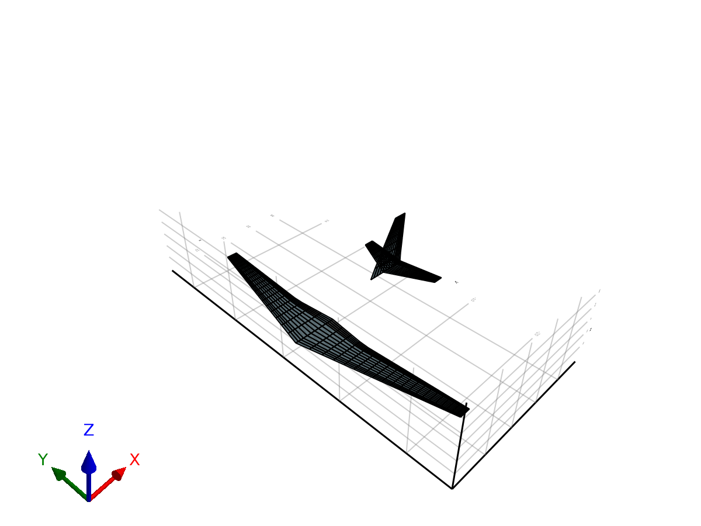

Coupled 6DOF Flight Dynamics of SE2A Aircraft
This example demonstrates the simulation of the coupled 6DOF flight dynamics of the SE2A aircraft, including unsteady aerodynamics (UVLM) and rigid-body equations of motion. We initialize the aircraft at a gliding state (forward speed 100 m/s and vertical speed 10 m/s) and integrate the system for 1.0 second.
using AeroPanels
using StaticArrays
using OrdinaryDiffEqTsit5
using GeometryBasics
using GLMakie
import GLMakie: Axis1. Load the SE2A Flight Dynamics Model
We construct the SE2A 6DOF aircraft model directly using AeroPanels built-in model constructor.
model = SE2AUnsteadyFlight();
aero_model = model.aero_model;2. Visualizing the Aircraft Aerodynamic Mesh
We visualize the 3D surface mesh and bound vortex grid using PlotModel.
fig = PlotModel(aero_model)
fig
3. Initial Coupled State & Inputs Setup
function init_flight!(arr, model)
arr.vb .= [100.0, 0.0, 10.0] # Initial body velocities: u=100 m/s, w=10 m/s (gliding descent)
arr.wb .= [0.0, 0.0, 0.0] # Initial angular rates p, q, r = 0
end
function flight_inputs!(arr, t)
arr.rho[1] = 1.225
endflight_inputs! (generic function with 1 method)4. Run the Coupled Simulation
We integrate the system for 1.0 second using the unified simulate API. We set start_from_trim=true to initialize wake circulations to steady state at t=0.
tspan = (0.0, 1.0)
res = simulate(model, tspan; input_func=flight_inputs!, init_func=init_flight!, solver=Tsit5(), start_from_trim=true);5. Display Results
println("--- SE2A Coupled Flight Simulation Results ---")
t_end = res.t[end]
println("Simulation completed successfully at t = ", t_end, " s")
println("Final Inertial Position (X, Y, Z): ", res.outputs.pos[end])
println("Final Body Velocities (u, v, w): ", res.outputs.vb[end])
println("Final Attitude Euler Angles (Roll, Pitch, Yaw): ", res.outputs.euler[end])
println("Final Angular Velocities (p, q, r): ", res.outputs.wb[end])--- SE2A Coupled Flight Simulation Results ---
Simulation completed successfully at t = 1.0 s
Final Inertial Position (X, Y, Z): [100.33640767831278, 1.1504205431100886e-5, 11.017523973295742]
Final Body Velocities (u, v, w): [101.25293977907442, 0.0009324041676119923, 6.355038129503336]
Final Attitude Euler Angles (Roll, Pitch, Yaw): [-2.053357221249528e-6, -0.061226462706095004, -9.323364451463897e-6]
Final Angular Velocities (p, q, r): [-6.221054333035983e-6, -0.0912017373542724, -1.8622889246555435e-5]
6. Exporting to FMI 2.0 Co-Simulation FMU
AeroPanels allows exporting coupled flight dynamics models to standard FMI 2.0 FMUs for co-simulation in MATLAB/Simulink or Python.
# fmu_path = BuildFMU(model, @__DIR__; fmu_name = "SE2AFlightDynamics")
# println("Exported FMU to: ", fmu_path)This page was generated using Literate.jl.